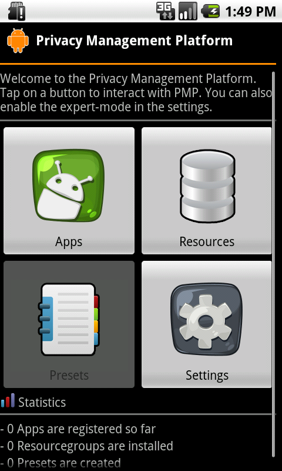
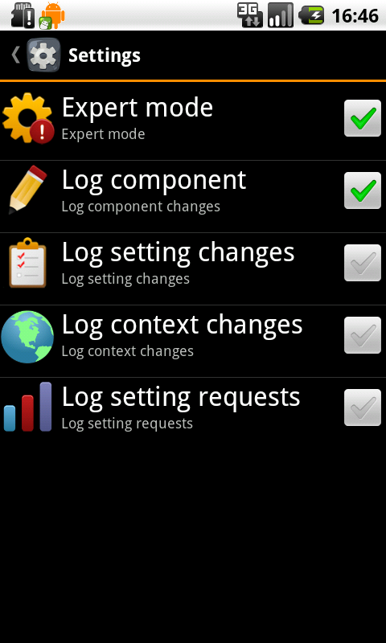
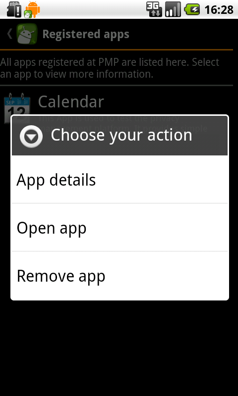
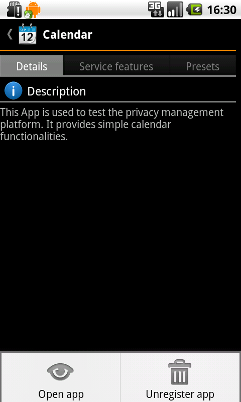
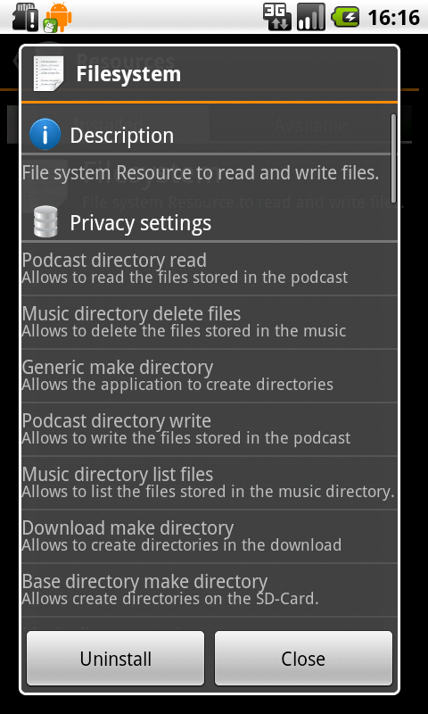

Einleitung
Zweck
Dieses Dokument stellt das Handbuch der "vHike" dar. Es soll Benutzern bei der Verwendung der vHike unterstützen. Auf eine gute Verständlichkeit wird Wert gelegt.
Leserkreis
Das Handbuch richtet sich an folgende Lesergruppen:
- den App-Benutzern
- den Entwicklern von Ressourcengruppen (für die vHike)
- den Entwicklern von Applikationen inkl. deren Service Features
- dem Kunden
- den Betreuern des Studienprojekts
Konventionen
In diesem Dokument werden mehrere Konventionen verwendet, um knapp, übersichtlich, lesbar und treffend zu sein:
- Für Überbegriffe wie Benutzer oder Entwickler wird das generische Maskulinum verwendet. Da die Deutsche Sprache hier keine zufrieden stellende Alternative kennt, sind damit selbstverständlich auch alle weiblichen Leserinnen angesprochen.
- In diesem Dokument wird die deutsche Sprache verwendet; dabei ist allerdings zu beachten, dass sich übernommene oder übersetzte Begriffe aus dem Englischen nicht vermeiden lassen. Diese werden dann jedoch grammatikalisch an die Deutsche Sprache angepasst.
- Ein Verweis in diesem Dokument auf andere Kapitel wird so dargestellt:
Grundbegriffe
Dieser Abschnitt erläutert einige Grundbegriffe die im Kontext der vHike verwendet werden.
Fahrer & Mitfahrer
Benutzer die Fahrten anbieten werden als Fahrer bezeichnet. Mitfahrer dagegen, nehmen an Fahrten teil, wobei hier auch potentielle Mitfahrer als Mitfahrer angesehen werden.
Ressource
Jede Ressource definiert mehrere so genannte Privacy Settings. Diesen können verschiedene Werte zugewiesen werden (etwa erlauben oder nicht). Abhängig vom gesetzten Wert ist ein Zugriff auf eine Funktion der Ressource möglich (ist etwa des Privacy Setting "Datei lesen" gesetzt, das Setting "Datei schreiben" jedoch nicht, so erlaubt die Ressource "Dateisystem" nur das Auslesen einer Datei, nicht jedoch das Schreiben in eine Datei).
Service Features
Jede PMP-Applikation, wie zum Beispiel vHike, legt fest, welche Funktionen bestimmter Ressourcen sie benötigt und welche Dienste sie hierfür dem Benutzer anbietet. Diese Vereinbarung wird als Service Feature bezeichnet. Eine Applikation besitzt in der Regel mehrere Service Features. Die Ressourcengrouppen und Service Features von vHike werden in Kapitel ??? behandelt.
Im Detail legt jedes Service Feature fest, welche Ressourcen, und welche Funktionen dieser Ressource, benötigt werden. Im Gegenzug bietet die Applikation dem Anwender für den Zugriff auf diese Ressource bzw. dieser Funktion bestimmte Funktionalitäten an.
Es können bei Bedarf mehrere Service Features gleichzeitig aktiviert werden, wodurch der Funktionsumfang der Applikation erweitert werden kann.
Systemanforderungen
Um vHike installieren und ausführen zu können, muss auf dem Zielgerät mindestens Android in der Version 2.1.1 installiert sein. Auch notwending ist die Verwendung von PMP - Privacy Management Platform. Weitere Anforderungen sind ein Zielgerät mit Internet-Zugang, Bluetooth und GPS. In der Beschreibung der jeweiligen Ressourcen finden Sie in der Regel Informationen über deren Systemanforderungen.
Funktionen
Dieser Abschnitt richtet sich an die Benutzer der vHike.
Installation
vHike wird wie eine gewöhnliche Android-Applikation installiert. Hierzu wird entweder die apk-Datei der vHike-Anwendung auf das Gerät übertragen, oder vHike wird aus dem Android Market ausgewählt. Folgen Sie anschließend bitte den Anweisungen des Android-Betriebssystems.
Sprache
Die Beschriftung der Elemente der Benutzeroberfläche erfolgt durchgängig in Englisch. Andere Sprachen werden momentan nicht unterützt.
Da, wie bereits erwähnt, die Standard-Beschriftung auf Englisch erfolgt, wird auch in den Bildschirmfotos und bei der Benennung der Schaltflächen in den folgenden Abschnitten die englische Variante verwendet.
Login-Menü
{kind=link}
Ausgangspunkt der Verwendung von vHike bildet das Login-Menü, dass sich beim Starten der Anwendung öffnet. vHike bietet zwei Varianten an, wie die App benutzt werden können. vHike unterscheid zwischen der Internet-Funktion und der Bluetooth-Funktion.
- Zum Benutzen der Internet-Funktion, ist eine Internetverbindung und GPS notwendig. Dazu ist eine Registierung bzw. ein Login notwending. Es sind also Benutzername und Passwort eingezugeben, um sich erfolgreich einloggen zu können.(siehe ).
- Zum Benutzen der Bluetooth-Funktion muss Bluetooth verfügbar sein. Eine Internetverbindung ist dazu nicht notwendig. (siehe ).
- Wird die Internet-Funktion benutzt kann, über setzen der "Auto-Login"-Checkbox, Benutzername und Passwort gespeichert werden und beim Wiederverwenden automatisch eingeloggt werden.
- Über die "Remember"-Checkbox werden benutzername und Passwort gemerkt, aber nicht automatisch eingeloggt.(siehe ).
- Über das Login-Menü kann man sich bei vHike registrieren. Dazu wird ein neues Fenster geöffnet.(siehe ).
Haupt-Menü
{kind=link}
Registierung
Fahrt planen/teilnehmen
Profile
History
My Trips
{kind=link}
My messages
{kind=link}
Logout
Ressourcen anzeigen und deinstallieren
{kind=link}
Versionshistorie
Version 0.1 (20.09.2011)
- Initiales Gerüst von PMP Handbuch